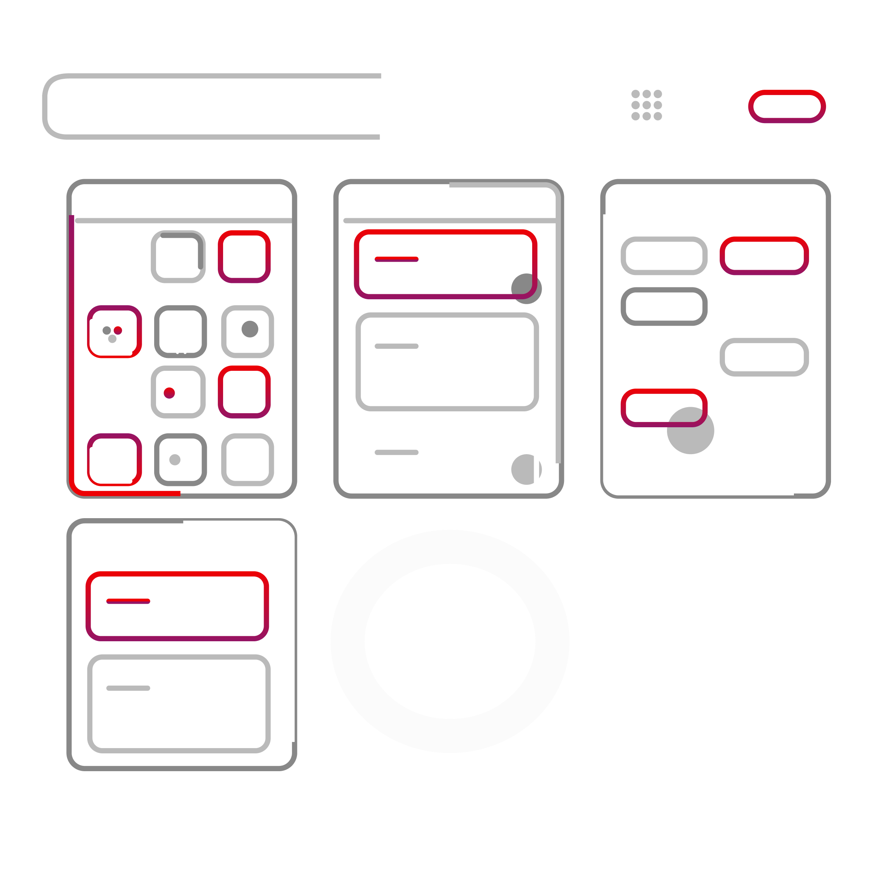
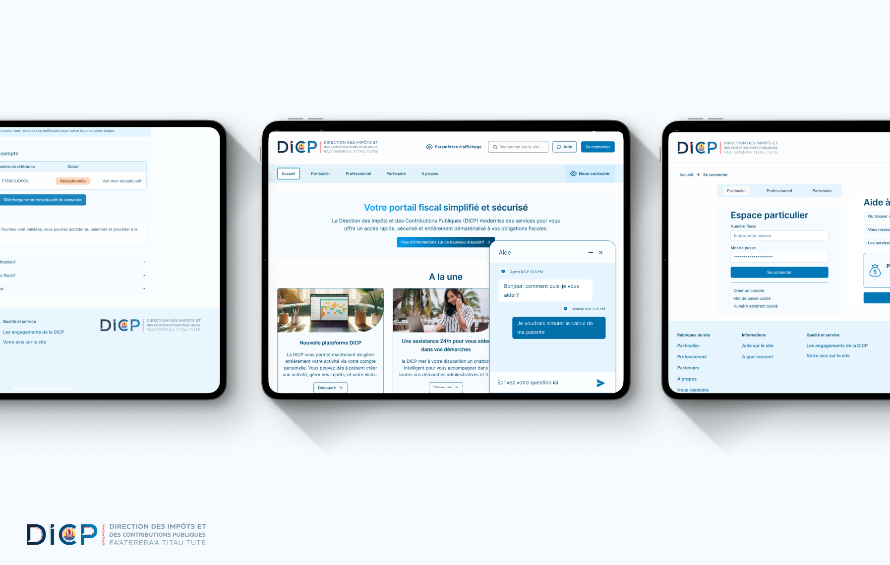
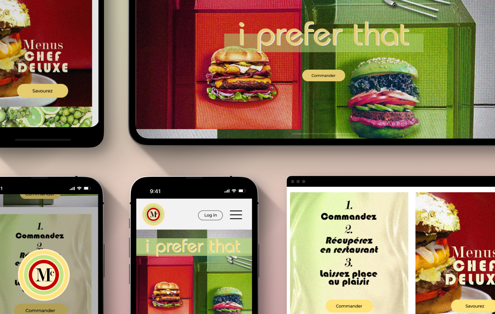
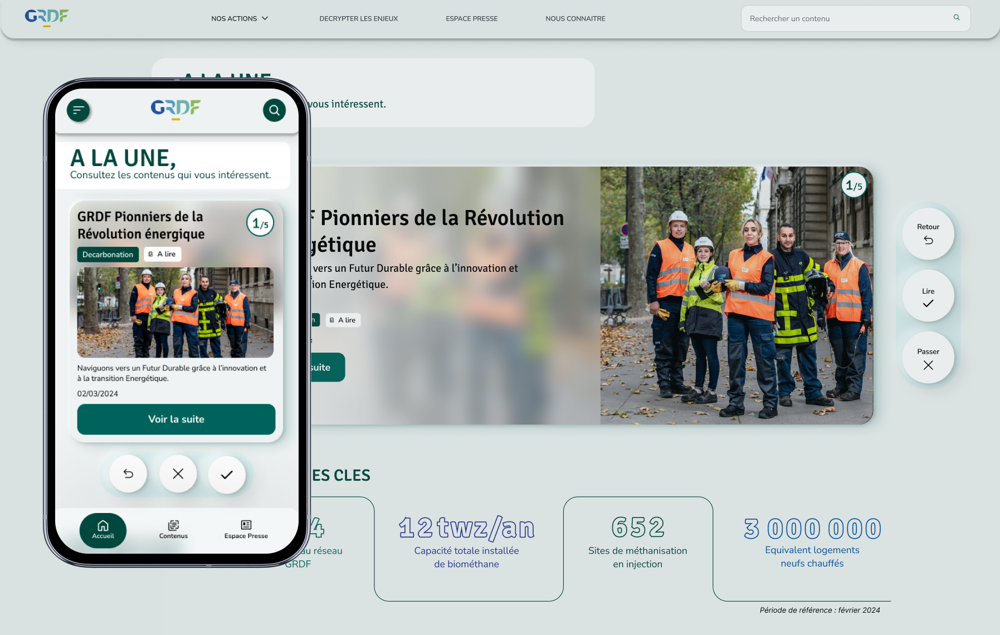
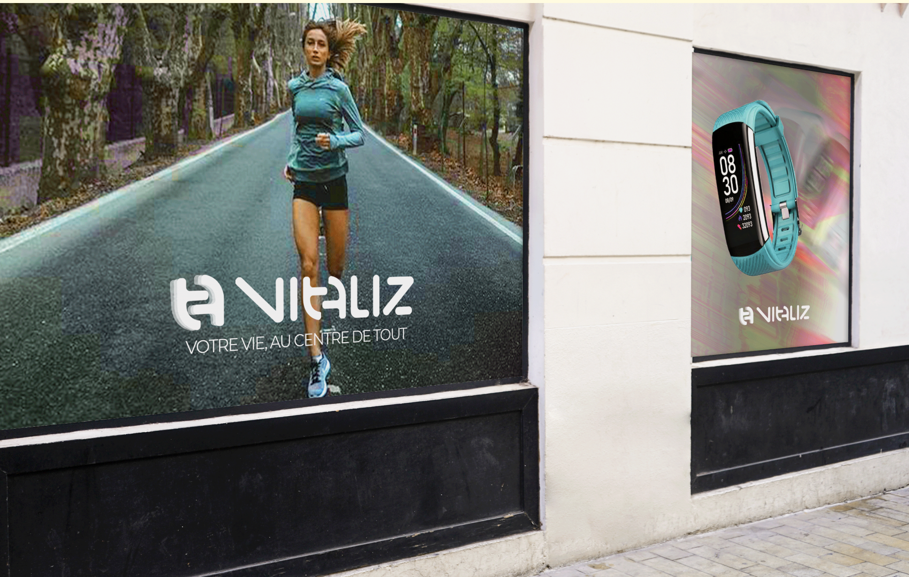
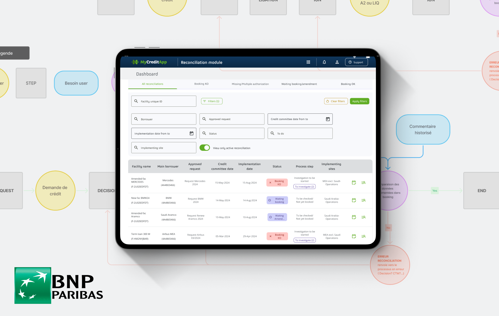
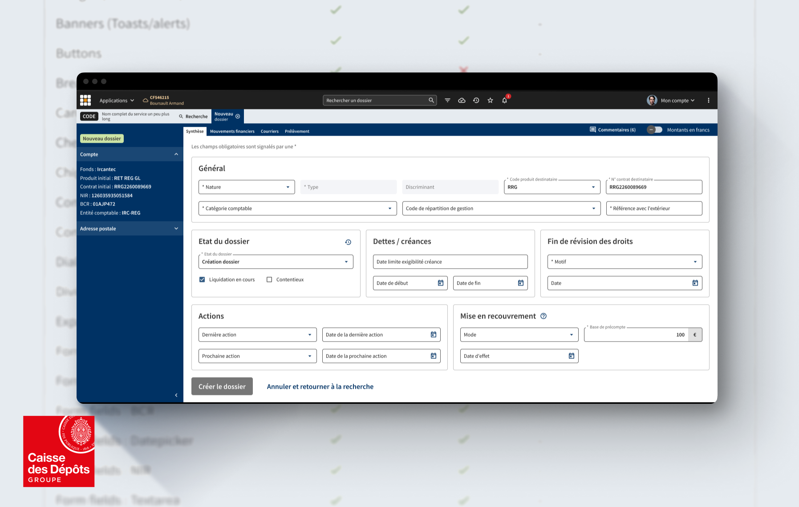
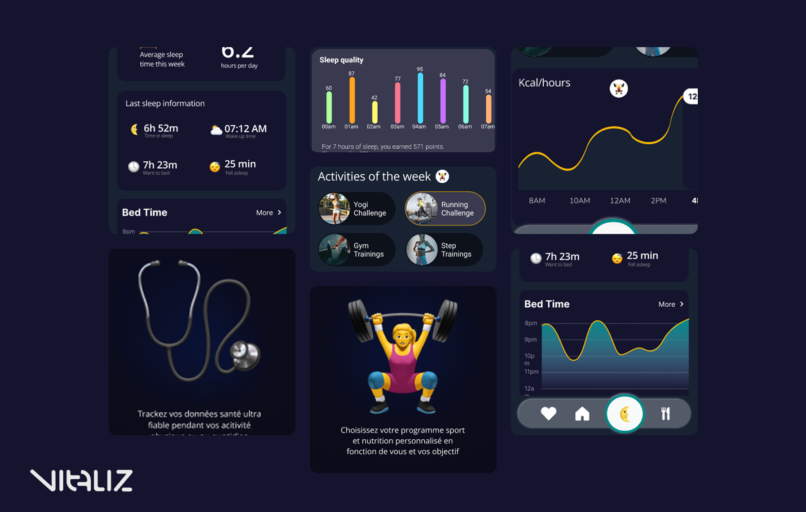
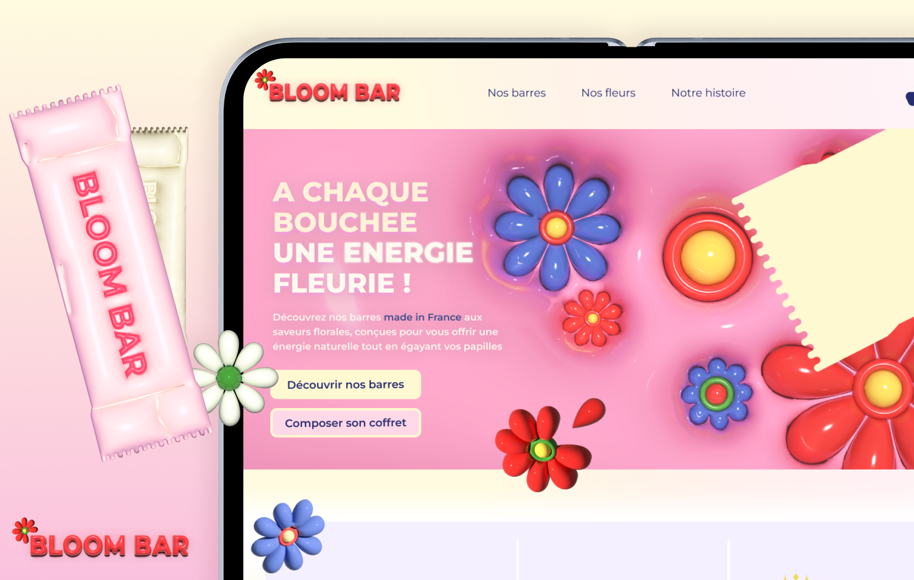

Product Designer | 4+ Years of Experience
I am a UX/UI Designer passionate about creating user-centered digital experiences and driving innovation. I've had the opportunity to collaborate with global brands such as Balmain, Kering, GRDF and BNP Paribas CIB. Currently, at mc2i in Paris, I design intuitive interfaces that integrate Artificial Intelligence into complex business applications at BNP Paribas CIB.









• End-to-end UX & AI-Driven Solutions
• Design System Governance
• User Research & Testing
• Prototyping (Figma Expert)
• Accessibility & Eco-design
• Workshop facilitation
• Agile & Scrum methodologies
• Stakeholders alignment
• Product thinking
• Creative Suite: Photoshop, Illustrator, After Effect
• Collaboration: Jira, Confluence
• Development: HTML & CSS (Handoff)
• AI: Prompt Engineering, Vibe-coding
• Data Analysis & KPIs
• Digital strategy: SEO, SEA, CRM
BNP Paribas CIB - Product Designer
Scope: Full redesign of "MyCreditApp," an end-to-end corporate credit management platform. (15 modules)
Team: Collaborated within a core team of three UX Designers.
Complexity: Managed the concurrent redesign of 5 different modules to ensure seamless user flows and cross-platform consistency.
Industry Expertise: Developed a deep understanding of complex banking journeys and business-specific requirements.
Cross-functional Collaboration: Partnered closely with Product Owners, Business Analysts, and Developers to deliver optimized, high-performance solutions.
GRDF - UX UI Designer
Vision: Rebranding and redesigning the Act4Gaz platform into justdecarb.grdf.fr to establish GRDF as a leader in France's decarbonization efforts.
Scope: Transformation of the digital experience, focusing on high performance, accessibility, and brand awareness.
Strategic Objectives: Enhanced the user experience, optimized SEO (Search Engine Optimization), and increased digital accessibility.
Sustainability Focus: Promoted eco-responsibility by adhering to digital sustainability standards and reducing the platform's carbon footprint.
DICP - UX UI Designer / Product owner
Vision: Simplifying and digitizing the user journey for business tax contributions (Patentes) for individual entrepreneurs, artisans, and merchants.
Discovery & Analysis: Identified core needs and analyzed the ecosystem for both internal (administration) and external (taxpayers) users. KKey Actions:
• Mapped the global end-to-end journey as well as specific flows for each user persona.
• Authored detailed User Stories to align design requirements with development.
• Implemented and led the Agile Scrum framework to ensure iterative delivery.
• Built the new platform's interactive prototypes while strictly adhering to Digital Accessibility principles.
What my colleagues say
What a joy it was to recruit Anne-Sophie as a UX/UI expert in my team! Anne-Sophie is a sparkling individual who adapted very quickly to her new environment. She is autonomous, responsible, and self-taught, and I very quickly knew that I could trust her and delegate the management of very large projects to her. In particular, Anne-Sophie worked on major UX assignments, such as the development of a global multi-brand application and its entire universe of associated features. Proactive and resourceful, Anne-Sophie has a natural ease for knowing how to be discreet when needed and how to position herself at the right level when necessary. I hope that we will one day have the opportunity to work together again.
I had the pleasure of working in a duo with Anne-Sophie on a major UX project. Despite being at the start of her career, Anne-Sophie demonstrates great maturity in her approach. She has her own toolkit and knows exactly how and when to use each tool. This project also gave her the opportunity to put her research skills (interviews, analysis, synthesis) into practice with users. The results led us to propose a creative solution different from the one originally planned (demonstrating mental flexibility and an ability to follow the evidence). Throughout the project, Anne-Sophie maintained her commitment to delivering real added value to the people the project was intended for. I recommend her without hesitation.
A real gem...